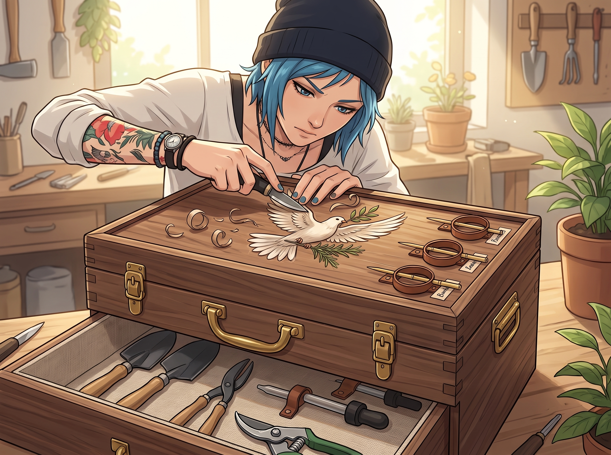
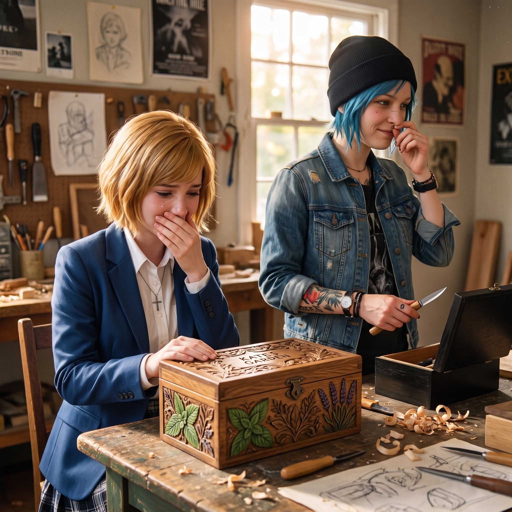

致凱特


那套香水防震箱的委託，Chloe 最終憑著近乎苛刻的精密手藝順利過關，Victoria 也難得大方地回贈了一套瑞士原產的黑檀木雕刻刀套組作為謝禮。有了新裝備的加持，Chloe 的「工匠之魂」徹底被點燃了。
地毯上重新鋪開了厚帆布。Chloe 盤腿坐下，將那套剛到手的瑞士黑檀木雕刻刀一字排開。在她面前擺著一個已經組裝完畢、由老胡桃木與回收黃銅角碼拼合而成的雙層便攜園藝工具箱。
「好了，Marsh，過來驗收妳的『大天使特裝型·綠植維護艙』。」Chloe 挑出一把刃口泛著冷冽寒光的微型平頭雕刻刀，用大拇指指甲試了試鋒利度，忍不住讚嘆了一聲，「媽的，這瑞士鋼材切木頭簡直像切黃油一樣順手。蔡斯，妳這次眼光確實沒得挑。」
「請注意妳的粗俗措辭，Price，那套工具的鋼材是經過深冷熱處理的。」Victoria 坐在單人沙發上，一邊優雅地用紙巾擦拭著她剛收穫的黃銅香水盒，一邊斜眼看著地毯上的施工現場。
Kate 繫著圍裙，雙手捧著一盤剛切好的蜜瓜和冰茶小步走過來，有些驚訝又驚喜地蹲在工具箱旁：「Chloe……這真的是給我的嗎？」
「廢話，不然給誰？」Chloe 咧嘴一笑，把木盒轉了半圈展示給她看。
工具箱的結構精巧得令人咋舌：下層是用來放小花鏟、修枝剪和滴管的加深防潮隔層，底部鋪著一層 Kate 最喜歡的亞麻粗布；上方是一根打磨得極其光滑的實心老黃銅提手，兩側卡扣經過精準調校，提起時完全不會夾手；外沿預留了四個皮革小環，剛好可以用來固定 Kate 平時採摘香草用的小竹籤與標籤卡。
「現在，進行最後一道工序——防偽與專屬主權標記。」Chloe 握緊手裡的黑檀木雕刻刀，神情瞬間變得極其專注。
手起刀落，木屑微捲。伴隨著清脆細膩的「沙沙」切削聲，Chloe 在胡桃木盒蓋的正中央，以極其流暢而精準的線條，雕刻出一隻展翅的小白鴿，嘴裡銜著一枝細小的橄欖枝與迷迭香。
在圖案下方，她用漂亮的哥德花體字刻下了一行小字：
「To Kate — Let there be light & blooms.」
（致凱特——願此處常有光芒與繁花盛開。）
「哇……」Kate 輕輕捂住嘴，眼眶微微泛起一圈濕潤的微光。她伸出手指，無比輕柔地撫摸著木盒上凹凸有致的花紋和字跡，「這太美了，Chloe……這是我見過最漂亮的工具箱。我明天採摘薄荷和薰衣草時就要用它！」
「行了行了，別感動到哭鼻子啊，大天使。」Chloe 撓了撓鼻尖，有些不好意思地別過頭，把刻刀在指尖轉了個圈收回黑檀木收納盒裡，「老娘只是看不慣妳平時用那個破鞋盒裝修枝剪而已。」
「這句話翻譯過來就是『我也很在乎妳』。」Max 戴著黑框眼鏡，悄悄從沙發後面探出腦袋，手裡的拍立得再次發出「咔嚓」一聲脆響。
「Maxine！把妳那台偷拍狂魔相機收起來！」Chloe 作勢抓起一塊木屑朝 Max 扔過去，客廳裡頓時又是一陣歡快的笑鬧。
Victoria 瞥了一眼那個精緻的木雕工具箱，端起冰茶輕輕抿了一口，嘴角微微揚起，隨後不緊不慢地補充道：
「……字體排版勉強達到了及格線。不過 Marsh，既然有了專業裝備，下週給 Loft 調配的室內香氛精油，產量必須提升百分之五十。」
「沒問題，Chase 總監！」Kate 笑得眼睛彎成了月牙，緊緊把沉甸甸的木箱抱在懷裡。
窗外波特蘭的暮色徹底轉為深藍，晚風吹拂著天台綠植的香氣湧入客廳，將這間滿是木屑味、金屬光澤與歡笑聲的房間，烘托得無比溫暖而踏實。